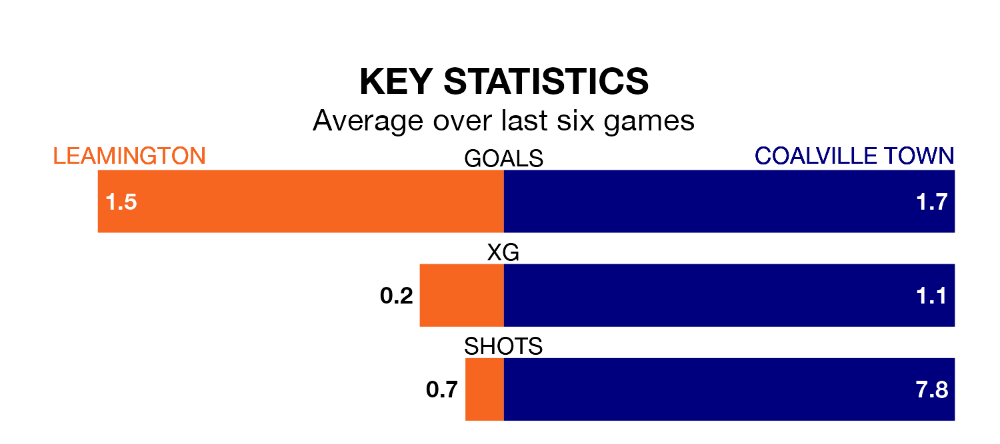

Coalville Town face a challenge to maintain their high-scoring form away against a tight Leamington defence on Saturday.
With 53 goals in 23 games, Coalville are the top scorers in Southern League Premier Central ahead of the 3pm kick-off at the Phillips 66 Community Stadium.
They face a Brakes side who have scored 38 in 26 matches, but conceded only 24 goals, putting them joint-third among the league's tightest defences – only Needham Market and AFC Telford United have conceded fewer goals.
Leamington are second in the table after 26 games, of which they have won 12 and drawn nine, earning 45 points.
Coalville are eight places behind the Brakes in 10th, with 10 wins and four draws putting them on 34 points.
The home side are in mixed form in Southern League Premier Central, with two wins and four draws from their last six games.
With two wins and three draws over that period, Town's form is slightly worse – they have taken nine points from 18, compared to Leamington's 10.
Leamington's last match was on January 6, a 2-0 win against Berkhamsted.
Coalville beat Redditch United 4-2 last time out, also on January 6.
Updated: 15:34, 08/01/24